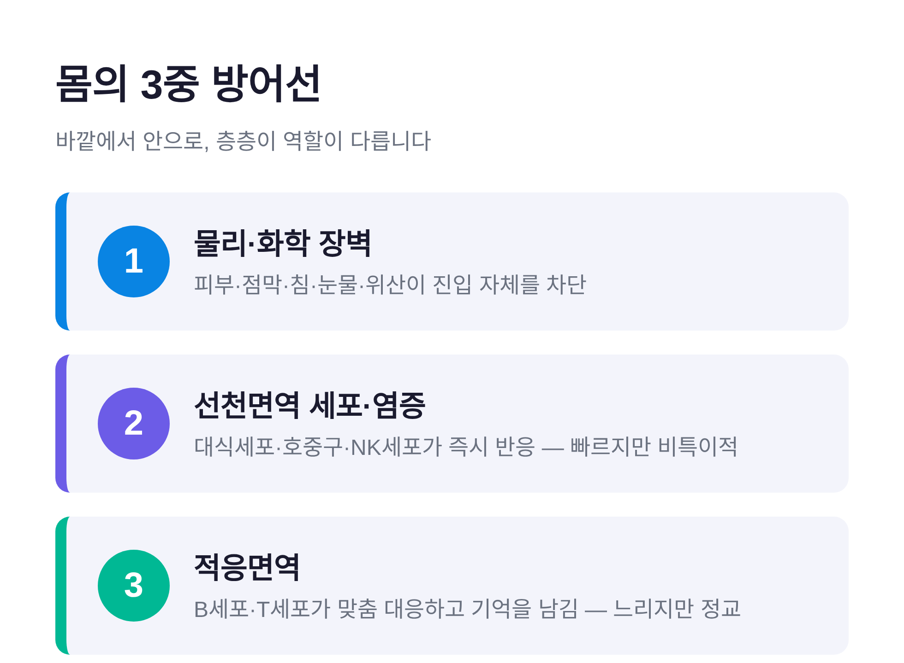
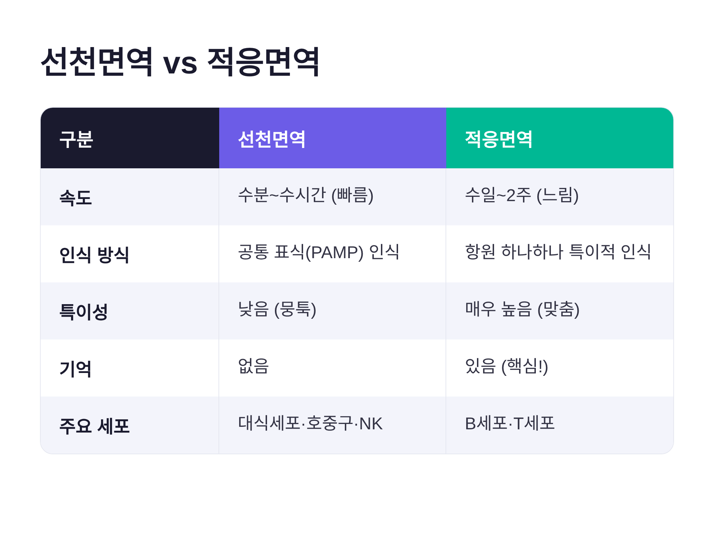
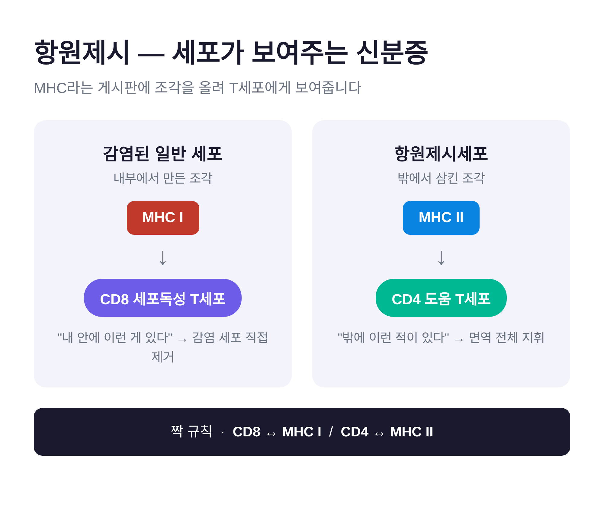
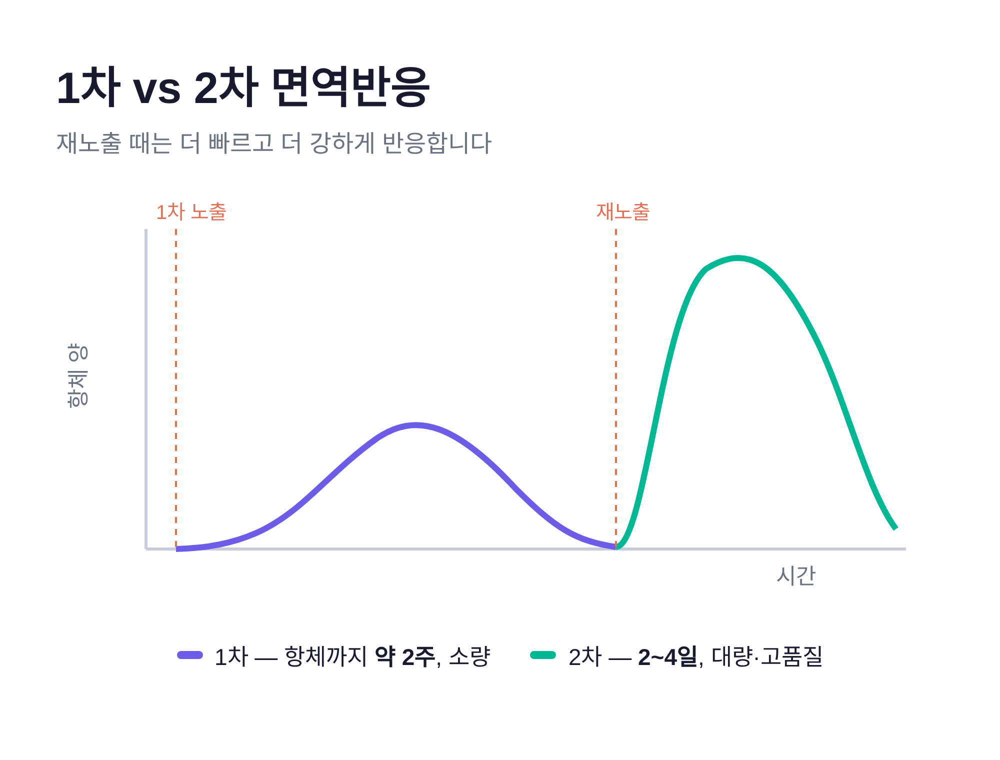
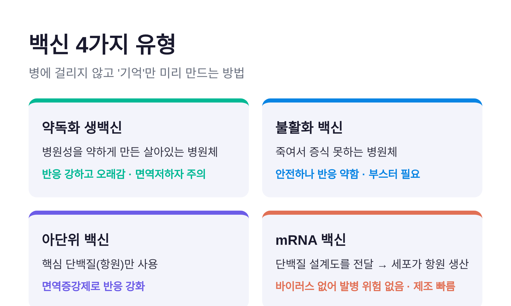

이번 글에서는 우리 몸의 면역계가 병원체를 어떻게 알아보고, 어떻게 기억하는지를 정리해 보겠습니다. 선천면역과 적응면역이 어떻게 나뉘는지, 항원제시와 면역기억은 무엇인지, 그리고 백신이 왜 효과를 내는지까지 차례로 살펴봅니다.
먼저 결론부터 짧게 말씀드립니다.
면역은 빠르지만 뭉툭한 방어(선천면역)와 느리지만 정교하고 기억을 남기는 방어(적응면역)의 이중 구조입니다. 백신은 이 중 두 번째, 곧 "기억"을 병에 걸리지 않고 미리 만들어 두는 기술입니다.
면역을 이해하는 가장 쉬운 방법은 방어선을 층으로 나눠 보는 것입니다.
1선은 물리·화학 장벽입니다. 피부와 점막, 그리고 침·눈물·위산 같은 분비물이 병원체의 진입 자체를 막습니다. 눈물과 침 속 라이소자임은 세균의 벽을 허물고, 위산의 강한 산성은 삼킨 미생물을 태웁니다.
2선은 선천면역 세포와 염증입니다. 장벽이 뚫리면 대식세포·호중구·NK세포가 즉시 반응합니다. 빠르지만 상대를 하나하나 구별하지는 못합니다.
3선은 적응면역입니다. B세포와 T세포가 특정 병원체에 딱 맞춰 대응하고, 그 경험을 기억으로 남깁니다.
예전에는 면역을 그저 "세면 좋은 힘"으로 여기곤 했습니다. 지금은 층층이 역할이 다른 정교한 시스템으로 봅니다.

선천면역의 특징은 속도입니다. 수분에서 수시간 안에 작동합니다.
비결은 인식 방식에 있습니다. 선천면역 세포는 적을 한 명씩 외우지 않습니다. 대신 "미생물이라면 공통으로 지닌 표식"을 알아봅니다. 이 표식을 PAMP라 부르고, 이를 읽는 수용체를 패턴인식수용체(PRR)라 합니다. 대표 격이 톨유사수용체(TLR)입니다. 어떤 TLR은 바이러스의 RNA를, 어떤 TLR은 세균의 특정 DNA나 내독소를 감지합니다.
현장의 일꾼들은 이렇게 나뉩니다.
염증은 이 과정의 신호탄입니다. 병원체를 감지한 세포가 히스타민 같은 물질을 뿜으면 혈관이 넓어지고 새어, 면역세포가 현장으로 쏟아져 들어옵니다. 발갛게 붓고 열이 나고 아픈 것은 방어가 작동 중이라는 표시인 셈입니다.
여기에 보체라는 단백질 무리가 가세합니다. 보체는 병원체 표면에 "먹어라" 표식을 붙이고(옵소닌화), 막에 구멍을 뚫어 직접 터뜨리기도 합니다.
다만 선천면역에는 한계가 분명합니다. 빠른 대신 정밀하지 않고, 무엇보다 기억을 남기지 못합니다. 같은 적이 다시 와도 처음처럼 대응합니다.

적응면역의 핵심은 "맞춤"입니다. 원리는 클론선택설로 설명합니다. 몸은 미리 헤아릴 수 없이 다양한 수용체를 가진 림프구를 준비해 둡니다. 어떤 항원이 들어오면, 그에 꼭 맞는 수용체를 가진 림프구만 골라 대량으로 불려냅니다.
크게 두 갈래입니다.
첫째는 B세포입니다. 활성화되면 형질세포로 변해 항체를 쏟아냅니다. 항체는 Y자 모양 단백질로, 끝의 두 팔로 병원체를 붙잡습니다. 병원체가 세포에 달라붙지 못하게 막고(중화), 식세포가 잘 삼키도록 표식을 붙이며(옵소닌화), 보체를 불러냅니다.
둘째는 T세포입니다. 두 종류로 나뉩니다.
여기서 한 가지 의문이 생깁니다. T세포는 세포 안에 숨은 바이러스를 어떻게 알아챌까요.
답은 MHC라는 장치에 있습니다. MHC는 세포 표면의 게시판입니다. 세포는 자기 안에서 만들어진 단백질 조각을 이 게시판에 올려 T세포에게 보여줍니다. 정상이면 정상 조각을, 감염됐다면 바이러스 조각을 내겁니다.
게시판은 두 종류입니다.
짝은 규칙적으로 맞습니다. CD8은 MHC I을, CD4는 MHC II를 읽습니다. 그리고 수지상세포는 이 둘을 잇는 다리입니다. 조직에서 병원체를 붙잡아 림프절로 달려가 T세포를 깨우는, 선천면역과 적응면역의 연결자입니다.

적응면역이 특별한 진짜 이유는 여기 있습니다. 바로 기억입니다.
처음 병원체를 만나면 몸은 준비에 시간을 씁니다. 맞는 림프구를 고르고 불리는 데 시간이 걸려, 항체가 충분히 나오기까지 약 2주가 필요합니다. 이것이 1차 면역반응입니다.
이때 몸은 당장 싸우는 세포만 만들지 않습니다. 싸움이 끝나도 사라지지 않는 기억세포를 함께 남깁니다.
그래서 같은 적이 다시 오면 이야기가 달라집니다. 기억 B세포가 곧바로 형질세포로 변해, 2~4일 만에 훨씬 많은 항체를 쏟아냅니다. 항체의 품질도 올라갑니다. 친화도 성숙이라는 과정을 거쳐, 병원체에 더 정확하고 강하게 달라붙습니다. 이것이 2차 면역반응입니다.
한 번 홍역을 앓은 사람이 다시 걸리지 않는 이유가 여기 있습니다.

백신의 원리는 이 기억 하나로 설명됩니다.
핵심은 이렇습니다. 진짜 병에 걸리지 않고, 기억세포와 항체 준비만 미리 끝내 두는 것. 병원체 또는 그 일부를 안전한 형태로 보여주면, 몸은 실제 감염 없이 1차 반응을 거쳐 기억을 남깁니다. 나중에 진짜 병원체가 오면 곧장 2차 반응이 작동합니다.
만드는 방식은 여러 가지입니다.

한 가지 덧붙이면, 면역은 몸이 기억을 유지하는 동안만 이어집니다. 홍역처럼 사실상 평생 가는 것도 있고, 시간이 지나며 약해지는 것도 있습니다. 후자를 위해 부스터로 기억을 다시 끌어올립니다.
또 충분히 많은 사람이 면역을 가지면, 병원체가 퍼질 길목이 막혀 면역이 없는 사람까지 간접 보호됩니다. 이를 집단면역이라 합니다.
정리하면 이렇습니다.
선천면역은 빠르게 막고, 적응면역은 정교하게 기억합니다. 항원제시는 그 둘을 잇고, 백신은 기억을 안전하게 앞당깁니다.
우리 몸은 매 순간 조용히 이 일을 해내고 있습니다. 열이 나고 몸이 무거운 날에도, 사실은 정교한 방어가 제 할 일을 하는 중인 셈입니다.
이 글은 교양 차원의 설명입니다. 개별 접종이나 건강 판단은 전문가와 상의하시길 권합니다.